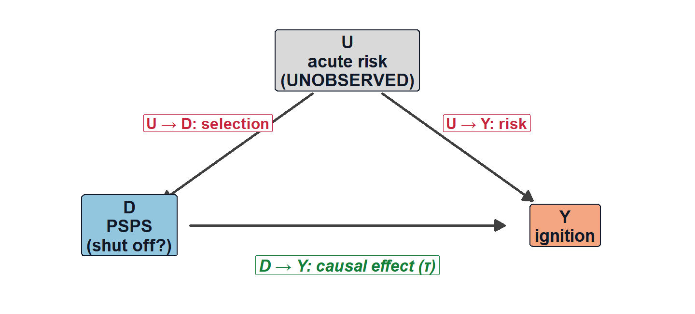
How effective is PSPS at preventing wildfires?
Public-data estimates and the case for utility-held records
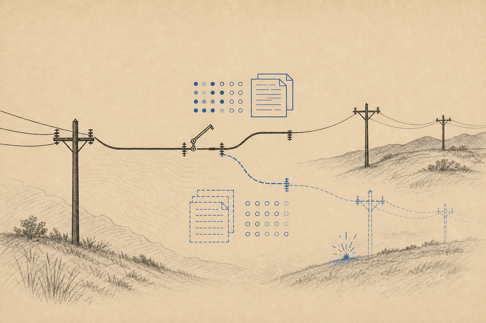
When the wind turns dangerous, California utilities cut power to high-risk lines—a Public Safety Power Shutoff (PSPS)—so a failing wire can’t start a fire. During major events, hundreds of thousands of customers can lose power. Can we put a number to the damage PSPS prevents? And what stands in for the counterfactual—the fires that would have burned had the power stayed on—when that outcome can never be observed directly? Using public data, this post walks from naive comparisons to stricter designs and shows why even the best public-data estimate is not yet causal. Each step explains what the revision buys, why it still falls short, and what would fix it. The close is a call for more, richer data.
Executive Summary
California’s utilities justify power shutoffs with simulations: models of the fires that would have burned had the power stayed on. No one, it appears, has checked the program against fires that actually happened. This post does, with public data.
The check runs into a wall. Shut-off circuit-days show 15.1× the ignition rate of ordinary days—read causally, shutoffs cause fires. They don’t. Utilities cut power exactly where and when fire risk peaks, so the raw comparison measures the risk, not the policy. Stripping that selection out every way the data allow—high-risk restrictions, circuit fixed effects, matching within storms, machine learning—leaves every adjusted estimate between +0.003 and +0.004 ignitions per circuit-day. Always positive, never near zero. Grant one mild assumption, that a de-energized line cannot start a fire, and a positive effect is impossible: what survives is bias, not effect. Two quasi-experiments don’t rescue it. One is too noisy to read; the other fails its own pre-test.
The trap is not PG&E’s alone. The same comparison at Southern California Edison gives the same pattern: a raw 24.5× collapses to 12.1× once the comparison is restricted to high-risk circuits. SDG&E publishes too little to check at all. And the records that would settle the question—the circuits considered for a shutoff but left on, and the risk scores behind each call—never leave the utilities. Public data cannot say whether shutoffs work. Utility data could.
Introduction
PSPS is a standing program. California’s utilities pre-emptively de-energize high fire-risk circuits during peak fire conditions (especially when winds are high), cutting power in some cases to hundreds of circuits. The public accounting of its benefits—the numbers that feed cost-benefit calculations—is built on simulation rather than observed outcomes. PG&E’s headline figure for 2024 comes from “24-hour fire simulations conducted by Technosylva in damage locations,” which, in PG&E’s words, “found that our 2024 PSPS events may have avoided up to 76,314.4 acres burned,” with 10,841 buildings and 10,868 residents in the simulated fires’ paths (2024 PSPS Post-Season Report, § IV.1, p. 32). The model takes each damage point identified during post-event patrols as a would-be ignition and simulates the fire that didn’t happen. The acres, the structures, the people—all of it is a counterfactual generated inside a model. What it is not—and what no one appears to have produced—is an estimate of PSPS’s effect checked against actual, observed ignition outcomes. That check is worth doing.
Pinning down the effect behind that figure runs into the same problem as most work in observational causal inference: the quantity that matters is the counterfactual—what would have happened (i.e. acres burned, structures lost, etc.) without the shutoff. In a clinical trial, there would be a control group to stand for this outcome. Here, the obvious experiment is off the table—nobody will randomly leave dangerous lines energized to see what catches fire—so cause has to be recovered from the data the program happened to produce. That’s hard here for one reason above all: the utility shuts off exactly the circuits it judges most dangerous, so any naive comparison tangles the effect of the shutoff with the very risk that triggered it (i.e. “correlation is not causation”). Another way of saying this: any naive estimate of PSPS’s effect on fire outcomes is biased away from the truth—and that bias is what the rest of this piece is about.
In case you need a primer on PSPS, you can read an earlier blog on California’s shutoff program here.
One scope note before the estimates begin: the deep ladder below is PG&E’s, because PG&E is the only utility with a covariate-rich public panel. Where an approximate SCE companion panel supports the same step—the raw comparison, the high-risk restriction, circuit fixed effects, the bounds—SCE’s results appear alongside, clearly labeled (how that panel is built, and its limits, comes later in the post). SDG&E lacks a public circuit map and is tracked in Methodology & data. Nothing here is folded into a California-wide estimate.
This PSPS analysis builds on a ‘sister’ analysis of another program, EPSS
A team of UC Berkeley researchers—Warner, Callaway & Fowlie (2025), in Nature Climate Change—studies the causal effect of Enhanced Powerline Safety Settings (EPSS): “fast-trip” settings that cut power within a fraction of a second of sensing a fault, giving a developing fault far less time to spark. Using quasi-experimental methods similar to the ones this piece outlines, they estimate that enabling fast-trip on a high-risk day cuts a circuit’s probability of causing an ignition by about 82% (67–90% CI). Fast-trip alone, they find, drives roughly 80% of PG&E’s total ignition reduction—at a lower cost per structure saved from burning than undergrounding lines or trimming vegetation. Numbers like these feed the cost-benefit ratios (now, increasingly, “benefit-cost ratios”) behind utility rate cases and wildfire-mitigation plans—and every such ratio needs an effectiveness number from somewhere.
The paper addresses PSPS as well, taking a simple approach: assuming the program is 100% effective. Once a line is de-energized, a fire on it is treated as impossible. It’s the same structural move as the Technosylva accounting above: effectiveness assumed, not estimated.
The proposal here: drop that assumption and estimate how PSPS actually performs in the wild. PSPS runs on machine-learning inputs and an algorithmic decision process, but implementation comes down to people identifying and de-energizing specific lines—so there is room for error, and for misses even without error: the wrong lines cut (too many or too few), or the right lines for the wrong window. Warner et al. note a version of this in their data: when a PSPS is called on a circuit, they record all of its high fire-threat line-miles as de-energized, “though in practice, fewer miles may be de-energized.” The grid’s sectionalizing devices mean parts of a “shut-off” circuit can stay live. What’s recorded as treated and what actually loses power are not the same thing.
This analysis—in blog form for now—uses observational data (recorded vegetation conditions, relative humidity, wind, and so on) and quasi-experimental methods like those in Warner et al. (2025) to produce a sequence of increasingly credible estimates of PSPS’s effect in practice: the kind of number that informs decision-making at California’s utilities and, through rate cases, the rates Californians pay for electricity.
How can turning off the power cause more wildfires? Starting with the naive comparison
The target is the causal effect of de-energization on ignitions as a first-order outcome: on a circuit-day the utility actually shut off power, how much did shutting off change ignitions relative to leaving it energized? In the potential-outcomes framework, circuit-day i has treatment D_i\in\{0,1\} (1 = de-energized) and two potential outcomes—Y_i(1) if shut off, Y_i(0) if not. The estimand is the average treatment effect on the treated, \tau_{\text{ATT}} \;=\; \mathbb{E}\!\left[\,Y_i(1) - Y_i(0) \mid D_i = 1\,\right], so a protective PSPS effect is negative, and “ignitions averted” is -\tau_{\text{ATT}}. The catch—the fundamental problem of causal inference—is that any shut-off circuit-day reveals Y_i(1) but never Y_i(0). (You can observe how someone feels after taking a vaccine; you can’t observe how that same person would have felt without it.) Estimating the effect is therefore less measurement than substitution: a believable value for the never-observed Y_i(0) (i.e. the counterfactual) has to be built from the circuit-days that are observed.
The crudest stand-in: use the ignition rate on the days without a shutoff as the counterfactual: \widehat{\text{RD}} = \bar Y_1 - \bar Y_0,\qquad \widehat{\text{RR}} = \bar Y_1 \big/ \bar Y_0 . Here \bar Y_1 is the average number of ignitions on shut-off (PSPS) days and \bar Y_0 the average on days without one. These are the same comparison on two scales: the risk difference \widehat{\text{RD}} subtracts one from the other—how many more ignitions per circuit-day a shutoff goes with—while the rate ratio \widehat{\text{RR}} divides them—how many times as likely an ignition is. What they share is the move that matters: both take \bar Y_0, the rate on days without a shutoff, as the stand-in for the Y_i(0) that is never observed.
That substitution works only if shut-off days would have looked like other days absent treatment. The figure says why they don’t: an unobserved common cause U—the dangerous conditions the operator is reacting to: high winds, dry vegetation, low humidity—drives both the shutoff (U\to D) and ignitions (U\to Y).
Across PG&E’s full panel of ~12.2 million circuit-days—and, in parallel, on the SCE companion panel assembled from public sources later in the post—shut-off days ignite far more often than other days:
| Quantity | PG&E | SCE |
|---|---|---|
| Rate ratio (RR) | 15.1× [10.9, 21.0] | 24.5× [7.9, 76.1] |
| Risk difference (RD) | +0.0048 [+0.0031, +0.0065] | +0.0017 [-0.0003, +0.0037] |
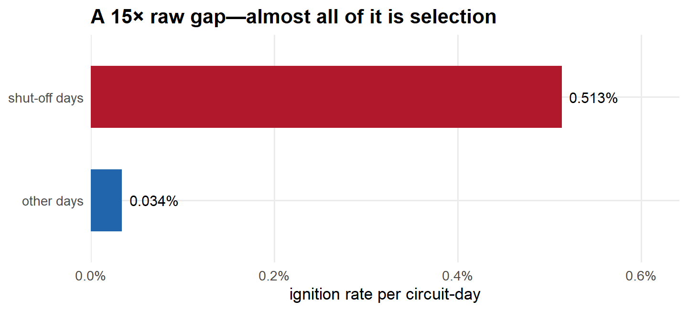
Add and subtract the treated group’s untreated outcome and the difference in means splits cleanly: \underbrace{\bar Y_1 - \bar Y_0}_{\text{the computed gap}}= \underbrace{\mathbb{E}[Y_i(1)-Y_i(0)\mid D_i=1]}_{\textstyle\color{#1a9850}{\tau_{\text{ATT}}\ \text{(want)}}}+ \underbrace{\mathbb{E}[Y_i(0)\mid D_i=1]-\mathbb{E}[Y_i(0)\mid D_i=0]}_{\textstyle\color{#b2182b}{\text{selection bias}}}.
ImportantWhere it breaks: the selection-bias term is doing almost all the work
The red term asks: would shut-off days have had more ignitions even if left energized? Emphatically yes—the utility selects the highest-risk days, so \mathbb{E}[Y_i(0)\mid D_i=1]\gg \mathbb{E}[Y_i(0)\mid D_i=0]. The term is large and positive, so \widehat{\text{RD}} is badly upward-biased; the 15× is mostly \color{#b2182b}{\text{selection}}, not \color{#1a9850}{\tau}. The causal effect can’t even be signed from this.
The bias shrinks only if treated and control days are made comparable. The cheapest next step: restrict to the places and days where a shutoff was even on the table, and watch how much of the 15× survives.
What about comparing only places and days where shutoffs were on the table?
This step keeps only the circuit-days where a shutoff was a live possibility: circuits in designated high fire-threat areas (the state’s HFTD tiers), on days when a PSPS event was underway somewhere on the system. The idea is to “condition” on an observed measure of risk—to stop comparing across the whole sample and instead compare only within groups that share the same value of that measure. Each such group is a “stratum”; here it is defined by place and day at once. (One bookkeeping note: this step imposes both restrictions together—the ladder’s one-change-per-step discipline starts at the next step.) Recomputing the gap inside that stratum, \widehat{\text{RD}}_X = \mathbb{E}[Y\mid D=1,X]-\mathbb{E}[Y\mid D=0,X], compares shut-off and non-shut-off circuit-days that at least fall in the same risk category. The payoff: the gap can no longer be inflated simply because shut-offs concentrate in dangerous places on dangerous days while most circuit-days are neither.
Every other circuit-day is dropped from the control pool—they were never plausible counterfactuals—and the gap is recomputed within the high-risk stratum only. This closes the part of the back-door path running through the observed slice of U.
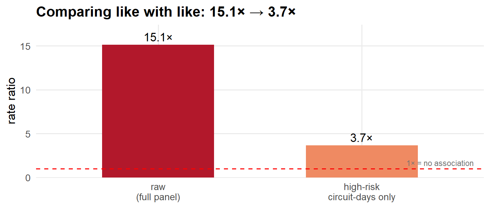
The risk difference barely moves (+0.0048 → +0.0040), but the ratio falls from 15.1× to 3.7×. That one restriction erased most of the alarm. The two scales disagree because the baseline moved: ignitions are several times more common on these high-risk circuit-days than on average days, so a nearly unchanged absolute gap becomes a much smaller multiple of it. The SCE panel behaves identically: the ratio halves (24.5× → 12.1×) while the absolute gap barely moves (+0.0017 → +0.0016).
ImportantWhere it breaks: conditioning on observed risk isn’t enough
Restricting to X=\text{high} removes only the confounding captured by the proxy. The operator’s real signal—wind gusts, equipment age, vegetation contact—is far richer than a binary tier. So within the high-risk stratum, shut-off days are still the riskier ones: \mathbb{E}[Y(0)\mid D=1,X]\ \color{#b2182b}{>}\ \mathbb{E}[Y(0)\mid D=0,X]. The bias shrank; it didn’t vanish—and it stuck at ~3.7×, not 1×.
But a binary fire-threat tier is a coarse description of a place. So the next step pushes the place adjustment as far as it can go—compare each circuit only to itself.
Maybe high-risk circuits are just different places?
Maybe the shut-off circuits aren’t just having worse days—they’re worse places. The circuits the utility de-energizes may run through steeper, drier, more wind-exposed terrain than the ones it never touches—so even the high-risk-only comparison could be picking up permanent differences between locations rather than the effect of the shutoff itself.
To rule that out, stop comparing circuits to each other and compare each circuit only to itself. Every circuit gets its own baseline ignition rate—a “fixed effect,” written \alpha_i—and the question becomes whether a circuit has more ignitions on the days it’s shut off than on its own ordinary days. In the model Y_{it} = \alpha_i + \tau D_{it} + \varepsilon_{it}, Y_{it} is the ignition outcome for circuit i in period t, D_{it} marks whether that circuit was shut off in period t, and \tau—the target—is how much a shutoff shifts ignitions. The circuit-specific term \alpha_i absorbs everything permanent about a location (its terrain, vegetation, and line age—anything that doesn’t change over time), so none of it can leak into \tau; \varepsilon_{it} is everything else.
Because each circuit serves as its own control, never-shut-off circuits contribute nothing; the estimate comes entirely from circuits de-energized on some days and not others—each one’s shut-off days against its own quiet days. That contrast is what “within-circuit variation” means.
| Quantity | PG&E | SCE |
|---|---|---|
| Rate ratio (within-circuit) | 2.8× [1.8, 4.3] | --- |
| Risk difference | +0.0034 [+0.0016, +0.0052] | +0.0015 [-0.0004, +0.0034] |
This step trims the estimate but doesn’t change the story. A shut-off day on a given circuit still shows about 2.8× the ignition rate of that same circuit on its ordinary days (down from 3.7× when circuits were compared to each other), and the absolute gap, +0.0034 ignitions per circuit-day, sits close to the previous step’s +0.0040. Giving every circuit its own baseline—and so erasing every permanent difference between locations—shaved off a slice of the gap and left the rest standing, which means the inflated gap was never mainly about which places get shut off. It’s about which days. (SCE, within-circuit: +0.0015—same direction, same story, wider interval.)
ImportantWhere it breaks: fixed effects can’t fix timed selection
\alpha_i removes confounders constant within a circuit. But PSPS is switched on for each circuit’s worst days—the treatment is correlated with the time-varying error, \color{#b2182b}{\operatorname{Cov}(D_{it},\varepsilon_{it})>0}. Being your own control doesn’t help when the question is which days you were treated on.
So the next step matches on the time-varying conditions too—each shut-off circuit-day to comparable non-shut-off circuit-days in the same storm.
What about controlling for everything measurable?
The last step pointed at days, not places—so this one goes after the days directly. Every shut-off circuit-day gets a comparison set of non-shut-off circuit-days from the same weather event, matched as closely as the data allow on the measurable conditions: wind, humidity, fuel dryness, vegetation, line mileage, terrain (call them X). Ignitions are then compared within each matched set.
This works only under an assumption called conditional ignorability, written \{Y(0),Y(1)\}\perp D\mid X. In plain terms: once two circuit-days match on everything in X, which one happened to be shut off is as good as random—so absent any treatment they would have ignited at the same rate, and the matched gap is the true effect \tau_{\text{ATT}}. It is a demanding comparison: same-storm matching plus a Poisson (or linear) model that also absorbs each individual circuit and each event.
| Quantity | Estimate | 95% CI |
|---|---|---|
| Rate ratio (cluster-bootstrap) | 4.4× | [1.4, 24.1] |
| Risk difference (matched ATT) | +0.0036 | [+0.0012, +0.0063] |
(From here through the machine-learning step, the estimates are PG&E-only: the SCE companion panel lacks the matched weather/fuel covariates. The trail picks SCE back up at the bounds.)
And the gap survives. The rate ratio actually ticks up a little—matching within the same storm sharpens the contrast rather than dissolving it—though its confidence interval is enormous, because ignitions are rare enough that ratios swing wildly from a handful of events. The number to watch is the absolute risk difference, +0.0036 ignitions per circuit-day, which is far steadier: it sits in the same narrow band as every step before it.
ImportantWhere it breaks: identification rests on an assumption known to be false
Conditional ignorability asks the shutoff to be as good as random among look-alike days. It isn’t: the utility de-energizes on its own real-time read of how dangerous a circuit is right now—judgment and local signals that never make it into X. So matched shut-off days are still genuinely riskier than their controls, \{Y(0)\}\not\perp D\mid X, and the estimate remains \color{#b2182b}{\tau + \text{unobserved-selection bias}}. Matching can only balance what got written down.
Maybe the problem is functional form. Flexible machine learning can rule that out—that’s next.
Can flexible machine learning squeeze the bias out?
So let machine learning fit the relationships between conditions and ignitions however the data want—no assumed straight lines—and remove as much observed-confounding bias as the measured covariates possibly allow.
The tool is the doubly-robust AIPW estimator. It leans on two models: a propensity model e(X), which predicts how likely each circuit-day was to be shut off, and an outcome model m_0(X)=\mathbb{E}[Y\mid X,D=0], which predicts its ignition rate had it not been. The appeal is the “doubly robust” property—the estimate stays valid as long as at least one of those two models is right: \hat\tau_{\text{AIPW}}=\tfrac1{n_1}\sum_i\Big[D_i(Y_i-\hat m_0)-(1-D_i)\tfrac{\hat e}{1-\hat e}(Y_i-\hat m_0)\Big]. Both are fit with lasso over a richly expanded set of X, cross-fit by circuit so no day is scored by a model that trained on it; circuit-days with no real counterpart are trimmed.
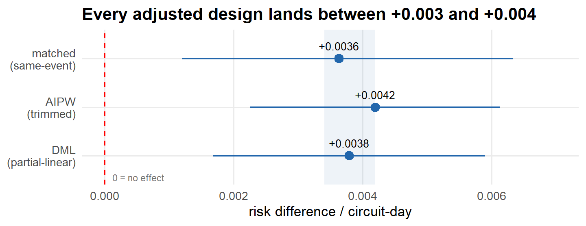
ImportantWhere it breaks: double robustness is robustness to form, not to unobservedness
Double robustness still buys nothing without ignorability: both models see only the observed X. Flexible ML can fix a wrong-shape problem, but it cannot recover a variable that was never recorded—and the estimate didn’t budge from rigid matching, so the leftover bias isn’t something any observed-covariate adjustment can reach. The leading suspect is the one from before: \color{#b2182b}{\text{unobserved acute-risk selection}}. (Overlap is poor, too—about half the control days have almost no chance of being shut off—a separate sign that a clean counterfactual barely exists in this data.)
If the bias can’t be removed, can it at least be bounded without assuming ignorability? That’s next.
Is the benchmark just picking up bad fire weather?
The suspicion all along has been that the benchmark gap is mostly confounding—dangerous fire weather driving both the decision to shut off and the ignitions themselves. A direct check is to find an outcome PSPS physically cannot affect but that the same bad weather still would, and run the identical matched comparison on it. If the method turns up a gap there, that gap has to be confounding, because there is no real effect for it to detect.
Non-utility ignitions—lightning strikes, arson, vehicle fires—are exactly that kind of outcome. De-energizing a power line does nothing to stop a lightning strike or a car fire, yet those fires are still more likely on the same high-risk days. An outcome like this is a “negative control,” or placebo: a true PSPS effect on it is impossible, so any gap the method reports is pure confounding signal—and a clean result, no gap, is reassurance that the method isn’t manufacturing one.
So the matched design from step 3 is re-run with the outcome swapped for non-utility ignitions (drawn from the federal FPA-FOD fire archive, whose current edition ends in 2020—so the test uses its 2014–2020 overlap with the panel). One fairness note: since the placebo data stop at 2020, the right yardstick is the utility result over those same years, not the larger full-panel headline.
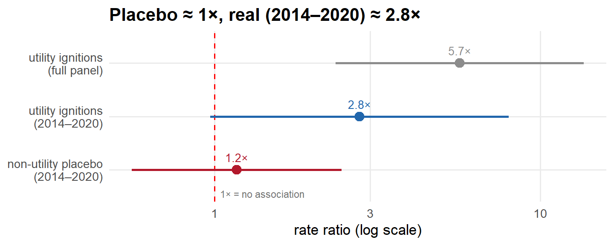
The placebo comes back clean. On non-utility fires—the ones PSPS is powerless to prevent—the matched comparison finds essentially no gap, a rate ratio statistically indistinguishable from 1×, while the real utility outcome over the same years sits near 2.8×. Taken at face value, that is reassuring: the benchmark isn’t simply conjuring a gap wherever the fire weather turns bad. One asterisk, though: the 2014–2020 utility estimate is itself imprecise—its interval crosses 1× and overlaps the placebo’s—so the contrast is suggestive, not sharp.
ImportantWhere it breaks: a clean placebo is not a clean diagnostic
A passing placebo is narrower reassurance than it looks. A negative control can only catch confounders that move both outcomes at once—generic fire weather, which makes every kind of fire more likely. But the confounder that matters here isn’t generic weather; it’s the utility’s selection on equipment-specific risk—it de-energizes the particular lines it judges most likely to fail. That risk has nothing to do with lightning or arson, so by construction it can’t move the placebo, and the test is blind to precisely the bias that’s biting. Two further cautions: with few non-utility ignitions in the matched sets the placebo is underpowered, and even the real comparator isn’t a fixed number—it runs about 5.7× over the full sample versus 2.8× in 2014–2020, tangled up with the post-2021 EPSS rollout. (The 5.7× is the matched design’s Poisson point estimate; its bootstrap-median counterpart is the 4.4× quoted at step 3.)
Adjusting, bounding, falsifying—every observational tool hits the same wall: the utility’s private, equipment-specific reason for cutting power. Getting past it takes something the adjustment toolkit can’t supply—variation in which circuits lose power that doesn’t come from the utility’s own risk judgment. That means turning to a quasi-experiment.
Can a difference-in-differences design break the tie?
Every observational fix so far has tried to measure the confounder and subtract it out. A difference-in-differences design gives up on measuring it and leans on a different assumption instead: parallel trends. The bet is that, absent any shutoff, the circuits that got de-energized would have drifted in step with comparable circuits that didn’t. The controls’ change over time then stands in for what the treated circuits would have done; the effect is whatever extra movement shows up on top. The appeal is that the bet can be partly checked: if treated and control circuits were already pulling apart in the weeks before the shutoff, parallel trends is in doubt. Tracking the estimate week by week, on both sides of the shutoff, is called an “event study.”
PSPS is a switching treatment—circuits cut in and out repeatedly, week to week—so the design here is PanelMatch, which pairs each shut-off circuit-week with control circuit-weeks that share the same recent on/off history, at weekly resolution. The gap is then read off in the weeks after a shutoff and, as a placebo, in the weeks before it, with bootstrapped confidence intervals (1936 matched sets across 808 circuits). One bookkeeping caution: these are circuit-week risk differences, a coarser scale than the daily ~+0.004 of the earlier steps, so don’t compare the magnitudes directly.
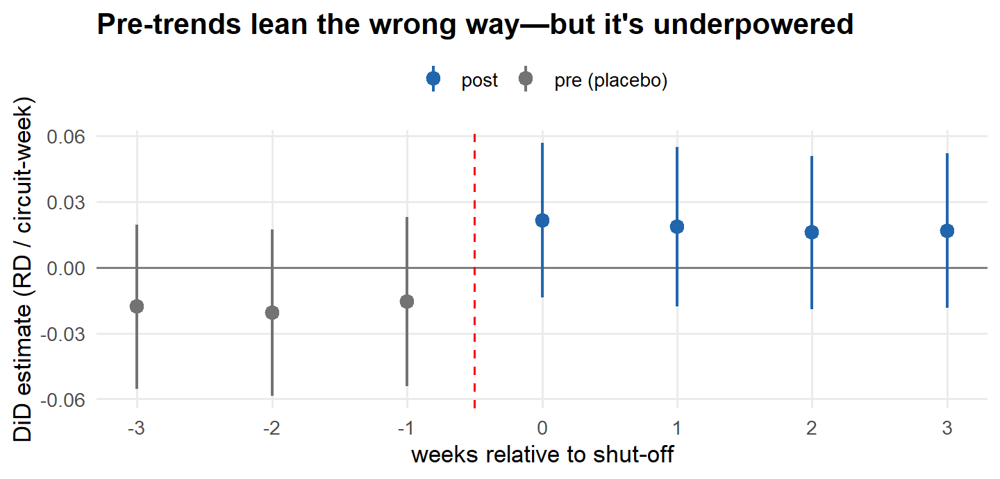
ImportantWhere it breaks: no clean parallel-trends pass—a noisy warning, not a falsification
The before-shutoff placebo checks are the tell. In the weeks before a circuit is de-energized, treated circuits sit below their matched controls; in the weeks after, they sit above. The lines cross at the shutoff. That crossing is the fingerprint of risk-based selection: shutoffs are timed to circuits on a steeply worsening trajectory, so their ignition rate climbs from under the controls’ to over it right as treatment arrives—exactly the pattern you’d expect whether or not PSPS does anything. But every one of those intervals still spans zero, so the pre-trend can’t be called real, and at weekly resolution the post-shutoff estimates are too imprecise to pin down either. So this is a \color{#b2182b}{\text{noisy warning sign}}—not a clean parallel-trends pass, and not a decisive failure. A difference-in-differences built on the utility’s own shutoff decisions can’t escape the selection problem; it can only make it faintly visible.
What this design still leaned on: the utility’s own risk-based decisions about which circuits to cut. To break the selection problem for good, the variation in who loses power has to come from somewhere other than a circuit’s own risk. One source remains in public data: a rule-change quasi-experiment.
Can rule changes act as a natural experiment?
There is one source of variation left that doesn’t trace back to a circuit’s own risk: the rule itself. PG&E’s PSPS eligibility criteria have been revised over time, so a circuit whose own characteristics held steady can still cross into eligibility when the rule expands. If those revisions were policy-driven—set for reasons unrelated to any single circuit’s ignition risk—then eligibility Z becomes a candidate instrument for realized PSPS D: it shifts who can be shut off without itself being a reaction to the circuit’s danger.
The estimator is instrumental variables. Schematically, after residualizing out circuit and date fixed effects, the local average treatment effect is the reduced-form effect of eligibility on ignitions divided by its effect on realized PSPS: Z_{it}=\mathbb{1}[\text{circuit } i \text{ is eligible under the rule in force at } t],\qquad \widehat{\text{LATE}}=\frac{\widehat{\operatorname{Cov}}(\tilde Y,\tilde Z)}{\widehat{\operatorname{Cov}}(\tilde D,\tilde Z)}, where the tildes denote residuals after the fixed effects. For this to recover a causal effect, eligibility has to clear three bars at once: it must be uncorrelated with circuit-specific ignition shocks (exogeneity, Z\perp U), it must affect ignitions only through realized PSPS (exclusion), and it must push circuits in a consistent direction (monotonicity).
Here is the catch, and it proves fatal. The clean version of this design needs a versioned, circuit-by-circuit eligibility rule rebuilt from public filings—and that does not exist in usable form. What the public record actually supports is one cruder approximation: a single rollout in which a circuit counts as eligible from 2019 onward if it carries any HFTD Tier 2/3 overhead line, and ineligible before. Later revisions are documented but not computable from this panel—the HFRA (High Fire-Risk Area) additions and removals, the decision-time tags, and the model outputs are all unobserved—so every “switcher” is really a circuit crossing the 2019 HFTD threshold, moving into eligibility once and never back out. Eligibility, in other words, is a relabeled high-risk tier. The figure shows the design and the path that invalidates it.
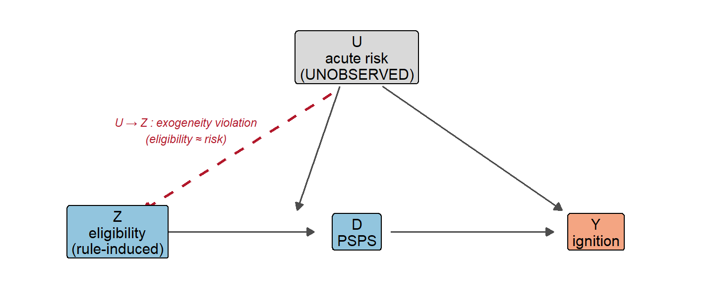
And so it fails in the most instructive way possible. Mechanically, the proxy has ample power: once the rule expands, HFTD-proxy circuits are de-energized far more often than the rest—PSPS touches about 0.44% of their circuit-days versus 0.005% for ineligible ones, a roughly 90-fold gap, which is what drives the first-stage F to about 1000. Substantively, that strength is the whole problem: a first stage this strong, built on a risk tier, is precisely what an invalid instrument looks like.
| Check | Result |
|---|---|
| First-stage F (eligibility → PSPS) | 1000 (very strong) |
| HFTD-proxy rollout switchers (into eligibility) | 808 of 3408 |
| Pre-2019 differential trend (proxy circuits) | +0.00010, p ≈ 9e-09 → FAILS |
| —ITT, eligibility (Poisson RR) | 0.65 (not credible) |
| —IV / LATE (risk diff) | -0.039 (not credible) |
One falsification was pre-committed before any estimation: a check for whether the proxy-eligible circuits were already on a different ignition trajectory before the 2019 rollout. If they were, eligibility is tracking risk rather than a clean rule change, and the instrument is invalid before estimation. They were, decisively (\color{#b2182b}{\text{pre-trend } p\approx 10^{-8}}). This is a pre-2019 differential-trend test on the HFTD-proxy circuits, not an event study around every documented revision—but it is decisive for the one contrast the public data support.
ImportantWhere it breaks: a strong first stage is not a valid instrument
The fallback still emits protective-looking numbers—an ITT Poisson rate ratio of 0.65 and an IV/LATE risk difference of -0.039. Set that second number against the base rates from earlier: even the riskiest circuit-days in this data ignite at about 0.6 per hundred. An effect of -3.9 per hundred would require that, absent the shutoff, the affected circuit-days were going to ignite at roughly 7 times the worst rate ever observed. Compliers are risk-selected, so their counterfactual rate plausibly runs above the average—but several times the observed maximum is implausible even granting that. These numbers appear only as an audit trail: they are the mechanical output of the pre-specified procedure, but the pre-trend failure means they carry no information about whether PSPS works—and the IV’s magnitude isn’t even plausible, which is its own small confirmation that the instrument is broken. On public data, “rule” and “risk” cannot be pried apart—the only computable eligibility signal is a risk tier, and risk is the very thing confounding everything else.
Adjust, bound, falsify, and both quasi-experiments—every public-data approach points the same way. The trouble isn’t that the data hold no usable variation; it’s that the variation they expose is the wrong kind, too tangled up with baseline risk to identify anything. The variation that would work lives in records only the utility holds.
So what would actually answer the question?
Up to this point, the pattern is clear. The raw 15× gap turned out to be overwhelmingly selection: restrict to high-risk circuit-days and it collapses; compare each circuit to itself and it shrinks only modestly; throw flexible machine learning at it and every adjusted design lands in the same narrow band, +0.003 to +0.004—always positive, never close to zero. Assumption-free worst-case bounds are too wide to pin the effect down—though they do flag the positive benchmark as bias, which is its own kind of useful. A placebo on fires PSPS cannot cause comes back clean—but is blind to the confounder that actually matters. And the two quasi-experiments public data support, the switching DiD and the reform-induced instrument, returned a noisy warning and an outright falsification.
Strip away the alarm, and one limitation remains. The utility de-energizes on its own real-time, equipment- and location-specific read of how dangerous a circuit is right now—and that read never enters the public record. Because the same risk drives ignitions, it confounds every comparison. Because it decides who gets treated, no amount of adjustment, bounding, falsification, or instrumenting can purge it. The worry at the start was generic fire weather; the wall at the end is something narrower and harder—the operator’s private risk signal. The remaining designs work around that limitation, and each needs data only the utility holds.
The fix is treatment variation that does not run through the operator’s judgment—variation that is, locally, as good as randomly assigned. Three designs deliver it, and each maps to a specific piece of utility-held data:
- Border RD—adjacent locations across a circuit boundary share the same weather and fuel, but only one side loses power; the jump in D at the boundary identifies a local effect (\tau_{\text{RD}}=\lim_{x\downarrow 0}\mathbb{E}[Y\mid x]-\lim_{x\uparrow 0}\mathbb{E}[Y\mid x], with x the signed distance to it). Needs circuit and boundary geometry.
- Fuzzy RD at the de-energization threshold—circuits just over the utility’s Fire Potential Index (FPI) cutoff (the FPI is the utility’s daily, model-based fire-risk score) get shut off, just under don’t, and the jump in shutoff probability at the cutoff is the instrument: the measured version of the rule-change idea, taken at the decision margin rather than the rule. Needs the decision-time FPI values and thresholds.
- Reform-induced DiD done right—the reform instrument plus the contemporaneous rationale for each rule change, which is what lets you argue the timing was policy- not risk-driven—the exogeneity the public version could not defend. Needs the revision-rationale record.
All three also rest on the one thing no public source contains: the scoped-but-not-shut-off circuits—the controls that were eligible for de-energization and didn’t get one. The public rule (per-cell FPI > 0.7, sustained wind > 19 mph, RH < 30%, dead-fuel moisture < 9–11%, plus the ≥ 25 of >45,000 4-km² grid-cell preparation trigger) is necessary but nowhere near sufficient; the effect lives in the realized values and the controls.
The SCE companion panel: how it’s built, and its limits
The SCE numbers that appear alongside PG&E’s throughout this post come from an approximate companion panel assembled from three public sources: SCE’s DRPEP circuit map (the full 4,261-circuit universe, with geometry), the CPUC’s all-IOU PSPS event records (treatment, by circuit name), and the CPUC fire-incident workbooks (outcomes, joined to circuits by location and validated against the one year SCE reported circuit names directly). Every join is gated: the build refuses to write a panel if a validation threshold fails—and the first attempt did fail, until the name matching was fixed for documented reasons rather than fuzzed.
Side by side, the two utilities tell one story:
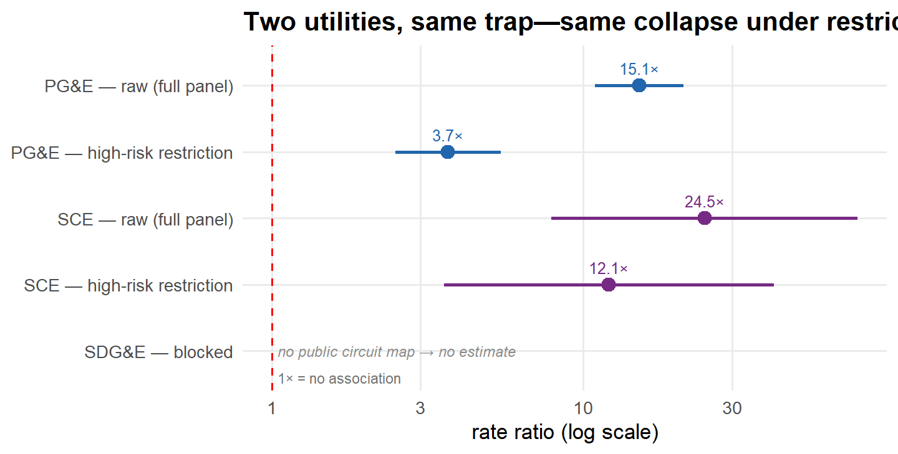
The figure is the headline comparison; the full SCE mini-ladder—including the within-circuit and bounds steps—lands the same way:
| Step | Rate ratio | Risk difference / circuit-day |
|---|---|---|
| 0 raw diff-in-means | 24.5× [7.9, 76.1] | +0.0017 |
| 1 high fire-threat circuits, event days | 12.1× [3.6, 41.0] | +0.0016 |
| 2 circuit fixed effects (LPM) | --- | +0.0015 [-0.0004, +0.0034] |
| 5 Manski / MTR bounds | --- | band [-0.998, +0.0018]; MTR pins the upper edge at 0 |
Within circuits, the estimate trims further while staying positive; and the naive estimate sits outside the monotone-treatment-response band—bias, not effect, by the same logic that convicted the PG&E benchmark. Read all of this as replication of the trap, not as a second deep ladder: SCE’s panel rests on 3 ignitions across 1,714 treated circuit-days, so the intervals are wide (the within-circuit interval crosses zero), and its covariate depth is far below the PG&E panel’s—the matched, DR/DML, and placebo steps aren’t built for SCE yet. SDG&E remains blocked: its CPUC ignition workbooks are staged, but no public circuit universe exists to join them to.
Why is PG&E the deep case study, then? Because that’s where a deep public panel exists—Warner et al.’s replication package did the heavy covariate assembly for PG&E circuits, and nobody has done the equivalent for SCE—and because the headline simulated counterfactual this post interrogates is PG&E’s. The selection problem itself is structural to how PSPS works, at any utility.
Is there a public shortcut? A check across the three large California IOUs
The SCE companion panel used everything the public record offers; here is the availability picture for the cleaner designs. The CPUC PSPS rollup covers all three major IOUs, the fire-incident workbooks are now staged for all three, and SCE adds the public circuit map that made its panel buildable (SDG&E publishes no equivalent). The detailed coverage audit is in Methodology & data; the deep ladder remains PG&E-only because only PG&E has a covariate-rich public panel.
For the cleaner designs, the deeper data gap is common across utilities:
| Utility | Decision rule public? | Treated-circuit FPI values? | Control identities / FPI? | Ignition outcome staged here? |
|---|---|---|---|---|
| PG&E | Yes (thresholds + logic) | No (rule only) | No | Yes (PG&E CPUC files via WCF) |
| SCE | Yes (FPI 1–17 + thresholds) | Yes (per de-energized circuit) | No (de-energized + downstream only) | Yes (CPUC workbooks 2014–2025) |
| SDG&E | Yes (FPI ≥ 14) | District-level only | No | Yes (CPUC workbooks 2014–2025) |
In every public source checked, utilities publish the rule and the treated circuits—never the controls. (California’s three smaller electric IOUs—PacifiCorp, Liberty, and Bear Valley—also run PSPS programs but are outside this scoping.) SCE is not a public clean-RD escape hatch: its treated-side running variable is unusually rich, but the control-side realized FPI and the scoped controls are still missing. SDG&E is thinner still at circuit-level decision-risk resolution. There’s no public-data workaround for the identified designs; the counterfactual is the missing piece everywhere.
TipThe honest bottom line
This post showed the naive public-data comparison is biased and exactly where each attempt to fix it breaks. It also made the service-territory breakout explicit: the deep ladder is PG&E’s; SCE now has an approximate replication panel that reproduces the confounded pattern (and only that); SDG&E is blocked on a public circuit map. None of this replaces what is missing everywhere: the scoped circuit list, decision-time FPI and thresholds, boundary geometry, and revision rationale. That is the data-release case—and it is an industry-wide ask, not a PG&E-specific one.
Every public-data approach lands in the same place
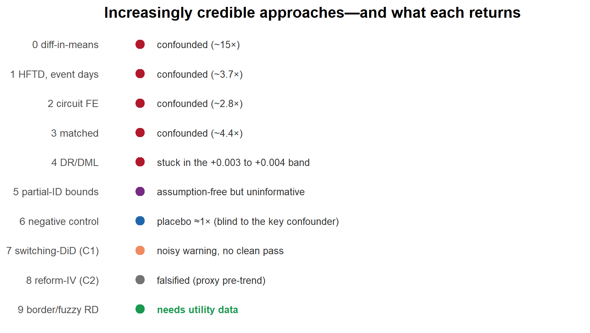
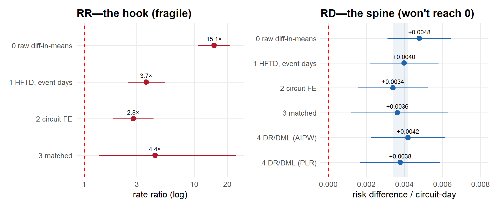
The estimate is stuck on the wrong side of zero—not because PSPS is harmful, but because selection is, and public data can’t see past it. Yet.
Public-data benchmarks; none of approaches 0–8 is a clean causal estimate (see each “Where it breaks” box). The switching-DiD is a single underpowered PanelMatch run (a cross-check with two other switching-treatment DiD estimators is queued); the reform-induced IV is falsified by an HFTD-proxy pre-trend test. The identified designs await utility operational data. Full methodology + data sources below.
Methodology & data
This section documents everything behind the analysis: estimand, unit and sample, every step’s estimator and identifying assumption, inference under rare events, the falsification logic, the quasi-experiments, the identified designs that need utility data, a full list of every data source with how each is used, and the limitations.
1Estimand and framework
Potential outcomes: for circuit-day i, D_i\in\{0,1\} and Y_i(1),Y_i(0); target \tau_{\text{ATT}}=\mathbb{E}[Y_i(1)-Y_i(0)\mid D_i=1], where a protective effect is negative and ignitions averted is -\tau_{\text{ATT}}. Because Y_i(0) is never observed for a shut-off circuit-day, each method is a stand-in for that counterfactual. In plain English: the target is how much a shutoff changed the ignition rate on the circuit-days that actually lost power. The risk difference is the headline; RRs appear as a descriptive hook, and for the rare-event matched benchmark the RR is read through its bootstrap median/percentile interval rather than its unstable mean.
2Unit, sample, and treatment
- Unit — circuit-day (PG&E distribution circuits), ~2014–2023.
- Sample — raw panel ≈ 12.2M circuit-days, thinned sharply by a high fire-threat (HFTD) overlap gate plus a same-event support filter to a 62,840-row high-risk analysis sample (78 event days; steps 1–2 and the DR/DML step all run on this slice). The canonical matched Stage-1 sample is a further-matched 15,423 rows (6,388 treated, 9,035 controls)—different samples, and they should not be conflated.
- Treatment —
psps_treatrebuilt from PSPS outage hours, not the source panel’s recodedis_psps. - Outcome — cause-coded utility ignition; base rate ≈ 0.2% in the high-risk analysis sample, ≈ 0.03% across the full panel (rare either way).
- Companion SCE panel (replication check only) —
analysis/data/all_iou/sce_panel.csv.gz: 16.6M circuit-days (4,261 DRPEP circuits × 2014-01-01–2024-08-31), treatment name-joined from the CPUC rollup, ignitions spatially joined from the CPUC workbooks, HFTD flag from the CPUC Fire-Threat Map. Build + validation gates:analysis/output/all_iou/sce_panel_build_report.md.
3Estimators, step by step
Each row is one step of the analysis—the design, the comparison it makes, the assumption that would make it valid, and the reason that assumption fails on public data.
| # | Design | Estimator | Identifying assumption | Why it falls short here |
|---|---|---|---|---|
| 0 | Difference in means | \bar Y_1-\bar Y_0 | treatment as good as random | selection: shut-off days are the riskiest |
| 1 | Restrict to shutoff-plausible circuit-days | diff-in-means, HFTD circuits on PSPS-event days | ignorability given the HFTD/event stratum | residual within-stratum risk unobserved |
| 2 | Within-circuit | circuit FE (LPM + Poisson, circuit-clustered) | no time-varying confounders | PSPS is timed to the worst days |
| 3 | Matched same-event | matched Poisson/LPM, circuit+event FE | conditional ignorability | ignorability false (operator’s private risk read) |
| 4 | DR/DML | cross-fitted AIPW + DML-PLR | ignorability (flexible form) | robust to form, not unobservedness |
| 5 | Partial ID | Manski + monotone treatment response | none (Manski); MTR adds one sign restriction | bounds uninformatively wide |
| 6 | Negative control | matched design on non-utility ignitions | placebo shares confounders, not effect | blind to utility-specific risk selection |
| 7 | Switching DiD | PanelMatch (circuit-week), event study | parallel trends | noisy warning, not a pass; underpowered |
| 8 | Reform-induced IV | eligibility instruments PSPS; pre-trend kill-switch | relevance + exogenous timing + exclusion + monotonicity | public eligibility ≈ risk → falsified |
| 9 | Border RD / fuzzy RD / reform-DiD done right | local RD/IV; DiD on rule changes | local continuity / exogenous timing | needs utility data |
One appendix check on step 2 (blog/fullpanel_fe.csv): run the identical within-circuit estimator on the full panel—no event-day restriction, so each circuit’s shut-off days are compared against all of its other days, calm winter days included. The estimate inflates to +0.0043 (RR 5.9×), versus +0.0034 (RR 2.8×) on event days only. That is not a robustness check that “should agree”—it is the day-selection confounding on display: the more ordinary days allowed into the comparison, the bigger the spurious within-circuit gap.
4Inference and rare-event handling
Workhorse: clustered Poisson with fixed effects (fixest::fepois); LPM and conditional logit as companions. Cluster-robust SEs at the circuit, a circuit-cluster bootstrap (B = 3,000), and a permutation test (P = 3,000). Because ignitions are rare, the RR is unstable (its bootstrap upper tail blows up when a matched cell’s control rate ≈ 0), so the risk difference is reported. The early descriptive RRs (steps 0–1) carry direct, unclustered Katz-style intervals; step 2’s fixed-effects intervals are circuit-clustered; the rare-event matched RR is read through bootstrap medians/percentile intervals rather than its mean. A Monte-Carlo study maps power (≳75–90% true reduction needed for reliable detection) and checks that the estimator is centred near the simulated truth.
5Partial identification
Manski worst-case bounds fill the missing Y_i(0) with its logical extremes, asking what can be said with essentially no assumptions about the counterfactual. Monotone treatment response then adds only one sign restriction, that PSPS cannot increase a circuit-day’s ignitions, which sharpens the upper edge to 0. Canonical: Manski [−0.994, +0.006], MTR upper 0.
6Falsification — the negative control
Re-run the matched design on non-utility ignitions (a placebo PSPS cannot cause). A non-null placebo flags confounding shared by both outcomes. Result: placebo ≈ 1× (vs ≈ 2.8× real, 2014–2020 apples-to-apples), which does not support the crude generic-weather story—though the placebo CI is wide and the test is structurally blind to the utility-specific confounder. Also surfaced the regime dependence (5.66 full vs 2.78 windowed).
7The quasi-experiments
- C1 (the switching DiD), PanelMatch: circuit-week panel. Because PSPS switches on and off rather than turning on once and staying on, the absorbing-treatment estimators (Callaway–Sant’Anna, Sun–Abraham) don’t apply; the valid family is history-matched or switching-treatment DiD (PanelMatch, de Chaisemartin–D’Haultfœuille /
dCdH,fect). Lag 4 weeks, leads 0–3, Mahalanobis refinement, bootstrap SE. Pre-trends lean the risk-selection way but span zero → a noisy warning, not a clean pass; underpowered at weekly resolution. - C2 (the reform-induced IV): eligibility under the prevailing regime instruments realized PSPS. The clean multi-regime rule is not computable from public filings; the implemented fallback is a single 2019 HFTD Tier 2/3 overhead-line rollout (ineligible before 2019, eligible after), so the only computable switchers move into eligibility once at the 2019 threshold. First stage is strong (F ≈ 1000) because that proxy is a risk tier; the pre-committed kill-switch—a pre-2019 differential-trend test on the proxy circuits—fails (p ≈ 10⁻⁸), so the fallback is falsified and its estimates are flagged not-credible.
8Identified designs requiring utility data
Each design compares units that are nearly identical except for whether the power was cut—across a shut-off boundary, just above versus just below the decision threshold, or before versus after a rule change—so identification no longer leans on the operator’s private risk read.
Border RD (Keele–Titiunik) at H3 hexagonal-grid-cell × hour across boundaries; fuzzy RD/IV (Calonico–Cattaneo–Titiunik) at the decision-time FPI threshold; reform-induced DiD with revision rationale. Triangulating all three is the goal—convergence is more credible than any one’s assumptions.
9Data sources — exhaustive, and how each is used
Role key: computed feeds a reported estimate (weather, fuel, and HFTD layers enter through the assembled WCF panel, not recomputed here); proxy-reconstruction approximates an unobserved quantity; scoping/context documents or scouts, but computes nothing reported; would-compute marks what the requested utility data would enable.
(A) Public-data analyses (steps 0–8).
Cross-IOU coverage audit. The analysis code checks all three major California IOUs. The table below reports, per utility, what is staged and what binds; every numeric estimate in the body of this post is from the PG&E panel.
| Utility | PSPS rows in CPUC rollup | Public inputs acquired | Parsed public rows | Current ladder output | Binding issue in this workspace |
|---|---|---|---|---|---|
| PG&E | 2,968 | 0 files | 0 | estimated | Runnable from WCF PG&E panel; clean designs still need scoped controls and decision-time risk records. |
| SCE | 1,947 | 2 files | 92 | estimated | Approximate public benchmark panel staged (DRPEP circuit universe + CPUC ignition workbooks + rollup treatment; see sce_panel_build_report.md). Clean designs still need scoped-but-not-cut controls and decision-time risk records. |
| SDG&E | 553 | 3 files | 175,205 | not yet runnable | no public full circuit-day denominator/crosswalk staged to the PG&E schema (ignition rows carry lat/long + facility IDs, not circuit names, so the join needs circuit geometries; no public circuit GIS staged); public FPI is district/worst-weather-day level, not circuit-day decision input |
| Source | Role | What it provides | How it’s used |
|---|---|---|---|
WCF replication panel (regression_dataset_clean_full.RData) |
computed | PG&E circuit-day panel: is_ignition, weather, fuel, HFTD miles, EPSS, undergrounding, region |
The analysis panel for all public-data steps 0–8 (outcome, covariates, gate), including the C2 fallback |
PSPS outage compilation (psps_compiled_PGE.RData) |
computed | psps_hours per circuit-day |
Rebuilds the treatment psps_treat |
WCF fitted FPI random forest (fitted_fpi_forest.RData) |
proxy-reconstruction | is_r3 (predicted FPI≥R3) |
Sensitivity-only alternate gate (flagged contaminated) |
| gridMET | computed | vpd, rmin, fm100/1000, tmmx, erc (weather) | Balance covariates, matching, controls (carried in the WCF panel) |
| LANDFIRE | computed | vegetation/fuel state | Fuel covariates, matching, heterogeneity (carried in the WCF panel) |
| CPUC/CAL FIRE HFTD map | computed | Tier 2 / Tier 3 overhead miles | High-risk gate (step 1) and C2 eligibility proxy (step 8), via the panel’s HFTD-mileage columns |
| CPUC PSPS Event Data | computed | PSPS event timing/scope | Treatment definition |
| FPA-FOD (Short, USFS) | computed | Non-utility cause-coded ignitions 2014–2020 | Negative-control outcome (step 6) |
Cross-IOU acquisition + driver (analysis/acquire_all_iou_public_inputs.py, analysis/all_iou_ladder.py; analysis/output/all_iou/*.csv) |
computed | Public input manifest, utility-by-utility input coverage, and estimate/status rows | Keeps the reporting explicitly broken out by PG&E, SCE, and SDG&E; prevents the PG&E estimate from being presented as California-wide |
| PG&E 2023 PSPS Decision-Making Guide | scoping/context | The rule + thresholds (per-cell FPI>0.7, RH<30%, wind>19mph, dead-fuel<9–11%; ≥25 of >45k 4-km² cells); FPI inputs | Documents the rule; basis for C2 eligibility framing + the data-ask context |
| PG&E WMP base plans + updates (2019–2025); CPUC R.18-12-005 decisions | proxy-reconstruction | Inclusion-criteria revision dates (FPI 2019/2021; HFRA 2020–22) | C2 approximate regime boundaries (low confidence beyond the 2019 HFTD proxy) |
(B) Cross-IOU public-data scoping (the “what would answer it” table).
| Source | Role | What it provides | How it’s used |
|---|---|---|---|
| CPUC PSPS post-event reports (SCE) | scoping/context | Per-de-energized-circuit FPI value + threshold, winds, risk score; in-scope counts | Established SCE’s treated-side richness but that controls aren’t published |
SCE WMP discovery bundle (MGRA-SCE-004.zip) |
scoping/context | 92 circuit/customer-count rows plus related risk-model context | Downloaded and parsed as public covariate scaffolding; not a full circuit-day denominator |
SDG&E WMP discovery workbooks (OEIS-P-WMP_2025-SDGE-07/08) |
scoping/context | FPI/wind proxy rows and 5,219 circuit/segment/span risk rows | Downloaded and parsed as public covariate/risk scaffolding; not a circuit-day outcome panel |
| CPUC Fire Incident Data Collection (all three IOUs, 2014–2025) | computed | Reportable utility ignitions: lat/long, date, facility IDs (circuit-named only in SCE’s 2020 file) | Staged by acquire_all_iou_public_inputs.py (verbatim per-year URL grid; magic-byte validated — the old landing pages are dead but the media files are live); outcome source for the SCE replication panel |
| SCE DRPEP “Distribution Circuits” FeatureServer | computed | Full SCE circuit universe (4,261 circuits) + line geometry | The SCE panel denominator and the ignition spatial-join target (nearest circuit, 570 m discard; 81.6% exact-name accuracy on the 2020 circuit-named validation set) |
| CPUC Fire-Threat Map Tier 2/3 (geodatabase) | computed | HFTD tier polygons | SCE circuit high-risk flag (the rung-1 gate), by circuit-polyline intersection |
SCE panel builder (analysis/build_sce_panel.py) |
computed | sce_panel.csv.gz: 16.6M circuit-days, treatment from the CPUC rollup (97.9% of rows name-matched), validation-gated |
The SCE replication estimates; gates + caveats in sce_panel_build_report.md |
| SDG&E circuit denominator and crosswalk | would-compute | Full service-territory circuit-day panel and ignition joins | No public source located (the GIS portals are access-gated apps; no anonymous FeatureServer like SCE’s DRPEP) — SDG&E stays blocked |
(C) Methodological lineage and context (cited, not data). Warner, Callaway & Fowlie (2025, Nature Climate Change)—lineage + panel source; their PSPS-“plausibly zero” assumption is the gap this fills. E3 (2021) WDRM review—the counterfactual problem. OEIS ACI PG&E-23-02 (2023 WMP cycle; not tracked as an open item in Energy Safety’s Feb 2026 decision approving PG&E’s 2026–2028 Base WMP)—the transparency lineage this argument builds on. Technosylva “may have avoided up to 76,314.4 acres burned” (2024) simulation, per PG&E’s 2024 PSPS Post-Season Report, § IV.1 (p. 32)—the accounting these estimates would benchmark: an ignition-level causal estimate tests its ignition-prevention step, while the simulated acreage additionally rests on fire-spread modeling conditional on ignition (the bridge is table D’s “ignitions-averted” row). Methods: Manski; Calonico–Cattaneo–Titiunik; Keele–Titiunik; Callaway–Sant’Anna, Sun–Abraham, de Chaisemartin–D’Haultfœuille; Imai et al. (PanelMatch); King–Zeng (rare-event logit).
(D) Utility-held data required for the identified designs — not yet available.
| Requested data | Role | Enables | Why public data can’t substitute |
|---|---|---|---|
| Scoped-but-not-shut-off circuit panel | would-compute | Border-RD controls; IV first stage | No IOU publishes the controls (PG&E, SCE, SDG&E confirmed) |
| Decision-time FPI + thresholds (all scoped circuits) | would-compute | Fuzzy-RD running variable | Public FPI is rule-only (PG&E) or treated-only (SCE) |
| Segment-level cause-coded ignitions | would-compute | All designs, at resolution | Public ignitions coarser / not segment-resolved (PG&E) |
| H3-to-circuit-segment crosswalk + boundary geometry | would-compute | Border RD spatial join | Not public |
| Revision rationale per criteria change | would-compute | Reform-induced exogeneity (fixes the reform-induced design) | Filings give the what/when, not the why |
| Field-patrol damage records; CMC (Continuous Monitoring Center) exposure | would-compute | Ignitions-averted bridge; confounder absorption | Internal operational records |
10Limitations
- The binding constraint: selection on unobserved acute risk. Every public-data point estimate of the realized-PSPS effect is exposed to it, and flexible adjustment (the DR/DML step) demonstrably can’t remove it; the partial-ID bounds avoid point identification only at the price of being uninformatively wide, and the placebo and diagnostics can expose the problem but not solve it.
- Power. Rare events ⇒ wide CIs; ≳75–90% true reduction needed; the switching-DiD’s weekly resolution underpowered.
- Regime dependence / EPSS substitution. The association is larger post-2021; the marginal PSPS effect over EPSS is only partly separable on public data.
- No public control pool, anywhere. All three IOUs publish the rule + treated circuits, never the scoped controls—so even design-based public shortcuts fail.
- Reconstruction is approximate. Public eligibility can’t reproduce proprietary models (PG&E IPW/Technosylva; SCE WRF) and can’t separate rule from risk (the reform-induced falsification).
- RD locality. The identified designs recover local effects (boundary/threshold); generalization is an assumption.
- Provenance. The panel is a third-party replication package; some upstream cleaning is inherited (the original
is_pspsrecode is bypassed by rebuilding treatment). - The SCE replication is approximate and underpowered. Its panel is assembled from name and spatial joins (validation gates documented in the build report), uses the current DRPEP circuit universe statically across the window, and rests on a handful of treated-day ignitions—so its intervals are wide. It shows the selection pattern replicates; it does not add a second deep ladder. SDG&E has no public circuit universe, so it remains a coverage row, not an estimate.
Footnotes
One caveat: monotone response isn’t bulletproof—re-energization faults are a documented ignition mechanism, which is why utilities patrol lines before restoring power—so the assumption quietly counts restoration-related ignitions as negligible or as falling on non-PSPS days. Worth probing with better data, but to rescue the benchmark it would have to be huge: most of the ignitions observed on shut-off days would need to be restoration-caused.↩︎